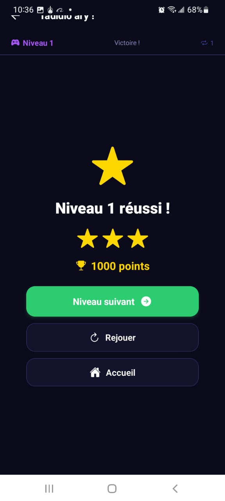
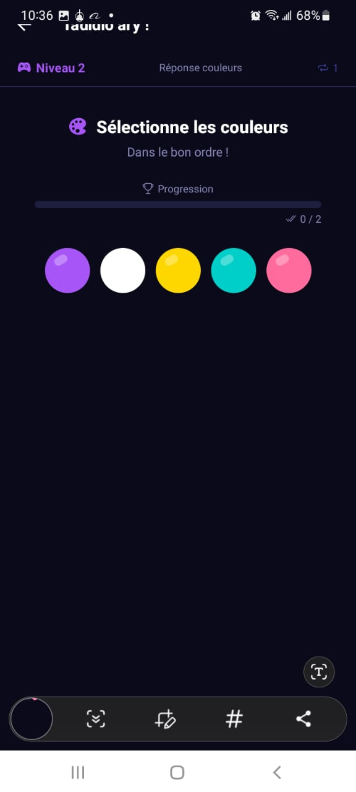

Screen 01
Level selection
The level selection screen: players progress step by step, unlocking the next levels after completing earlier ones.
A mobile memory game based on colour sequences. Players memorise a sequence, repeat it, earn points and gradually unlock new levels.
A mobile memory game based on colour sequences. Players memorise a sequence, repeat it, earn points and gradually unlock new levels.
The game combines visual memory, level progression, scoring and audio and haptic settings in a consistent mobile interface.
Each screenshot below illustrates a screen, a feature or a key step in the application.
The level selection screen: players progress step by step, unlocking the next levels after completing earlier ones.

The Tadidi Ary home screen, with shortcuts to play, view scores and open settings.

The success screen shows earned stars, points and a button to continue after completing a level.

During the memorisation phase, players watch the colour sequence before answering.

Players select the colours in the correct order and track their progress.

The scoreboard displays total points, completed levels and earned stars.

Game settings include sound effects, music, vibration, version information and a progress reset option.